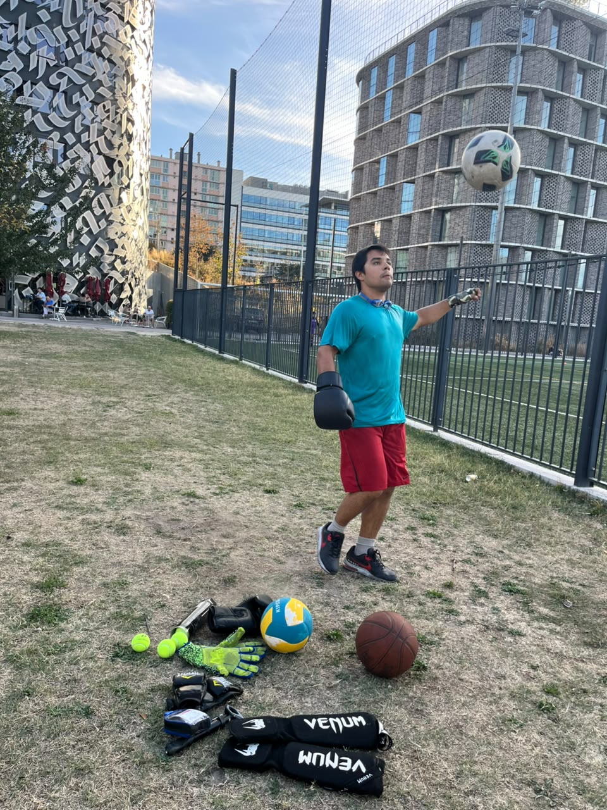

Comunicación
Informar con tiempo sobre torneos, actividades y oportunidades deportivas dentro de la Cité.
Más deporte. Más variedad. Más participación.
Quiero facilitar que hacer deporte en la Maison sea más sencillo, más diverso y accesible para quienes quieran participar, independientemente de su nivel.
Votación · 5 de octubre

Practico deporte regularmente y a lo largo de los años he tenido contacto con disciplinas muy diferentes.
He practicado deportes de equipo como fútbol, baloncesto y voleibol, pero también disciplinas de contacto como MMA, taekwondo y karate, además de entrenamiento individual.
Esa variedad es precisamente una de las razones por las que me interesa este puesto: creo que el deporte dentro de la residencia no debería limitarse a una sola actividad ni a un solo tipo de participante.
También tengo experiencia organizando eventos, por lo que me gustaría utilizar esa experiencia para facilitar actividades que realmente respondan a lo que los residentes quieran practicar.
Porque quiero darle al deporte el espacio que merece: como una forma de divertirnos, desconectar, mantenernos activos y conocer gente.
No se trata solamente de organizar partidos. Quiero facilitar que más residentes puedan encontrar, proponer y practicar las actividades que les interesan.
Informar con tiempo sobre torneos, actividades y oportunidades deportivas dentro de la Cité.
Facilitar que residentes interesados en el mismo deporte puedan encontrarse y convertir una idea en una actividad real.
Dar espacio a deportes colectivos, individuales, disciplinas de contacto, baile y otras propuestas de los propios residentes.
Priorizar actividades recreativas abiertas y, cuando exista interés, crear opciones competitivas o grupos adaptados al nivel.
Estas no son promesas cerradas. Son líneas de trabajo que pueden adaptarse según el interés de los residentes, los espacios disponibles y los recursos del comité.
Reunir y comunicar con tiempo los torneos, encuentros y actividades deportivas relevantes de la Cité para que no pasen desapercibidos.
Facilitar que quienes quieran practicar fútbol, baloncesto, voleibol, running, deportes de contacto u otras actividades puedan encontrarse y organizarse.
Organizar encuentros abiertos donde no sea necesario tener experiencia previa y donde el objetivo principal sea participar, divertirse y conocer gente.
Cuando exista suficiente interés, formar grupos o equipos con un enfoque más competitivo para participar en torneos de la Cité u otras actividades compatibles con el cargo.
No limitar la actividad a los deportes más habituales. Explorar también disciplinas de contacto, actividades individuales, baile y otras propuestas que puedan surgir de los residentes.
Si una actividad reúne personas con niveles muy diferentes, intentar organizarla de manera que principiantes y participantes avanzados puedan disfrutarla sin excluirse entre sí.
No quiero decidir de antemano qué actividades deberían hacerse. Si hay algo que te gustaría practicar, proponlo.
Si varias personas muestran interés en la misma actividad, tendremos una base real para intentar organizarla.
Proponer una actividadElección del Comité de Residentes
Maison du Mexique